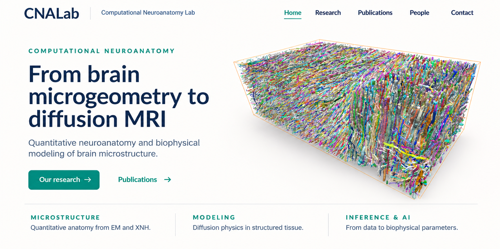
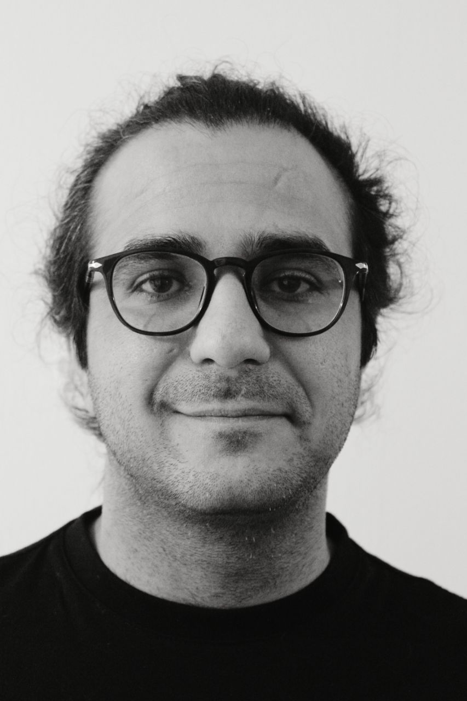

Nature Communications, vol. 16, 2025
Scattering approach to diffusion quantifies axonal damage in brain injury
Connecting axonal geometry with diffusion MRI in brain injury.
Read the paperComputational neuroanatomy
From brain microgeometry to diffusion MRI. We study the structure of brain tissue and the physics that connects it to the signals we measure.

Quantitative anatomy from volume EM.
Diffusion physics in structured tissue.
Computational tools for tissue analysis.
Nature Communications, vol. 16, 2025
Connecting axonal geometry with diffusion MRI in brain injury.
Read the paperCommunications Biology, vol. 4, 2021
Deep learning for segmentation of white matter in volume electron microscopy.
Read the paperScientific Reports, vol. 9, 2019
A computational approach to measuring axonal morphology in three dimensions.
Read the paperNature Communications, vol. 16, 2025
Imaging Neuroscience, vol. 2, 2024
Neuropsychopharmacology, 2023
Computer Methods and Programs in Biomedicine, vol. 220, 2022
Communications Biology, vol. 4, 2021
IEEE Access, vol. 9, 2021
Scientific Reports, vol. 9, 2019
Research
What does microscopic tissue organization reveal about the diffusion MRI signal? Our work connects three-dimensional anatomy, quantitative morphology, and biophysical modeling.
Large-scale electron microscopy of brain tissue.
Computational identification of axons and tissue components.
Quantifying axonal geometry in three dimensions.
Modeling tissue with biologically informed properties.
Connecting tissue microgeometry to macroscopic diffusion signals.
How is brain tissue organized, and how does injury change its geometry?
ACSON researchWhich features of axonal structure are reflected in water diffusion?
Scattering approachHow can learning-based methods make large microscopy volumes measurable?
DeepACSON researchFeatured method & resource
A framework connecting axonal microgeometry to diffusion MRI, with accompanying code and a linked research dataset.
Explore the 2025 paper
Principal Investigator
Computational tools for microscopy, white-matter morphology, and diffusion biophysics.
Contact Ali
Doctoral Researcher
Machine learning, data fusion, and image and signal processing.
Visiting Researcher
Project Researcher
Intern
Whole assembloids image analysis
Explore the lab’s publicly shared tools and research data.
Linking axonal microgeometry to diffusion signals.
View on GitHubAutomated white-matter segmentation and 3D morphometry.
View on GitHubDeep learning for large 3D electron microscopy volumes.
View on GitHubAn interactive interface for segmentation and morphology analysis.
View on GitHubPython tools for skeletonizing 3D objects.
View on GitHubQuantitative analysis of sprouting angiogenesis and lumen space.
View on GitHubSee repository records for dataset descriptions, access, and terms of use.
Axonal geometry and diffusion MRI in brain injury.
Ali Abdollahzadeh received a four-year grant for research on synthetic brain tissue.
Interested in computational neuroanatomy? Contact Ali to discuss research opportunities and joining the lab.